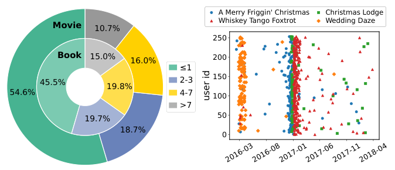
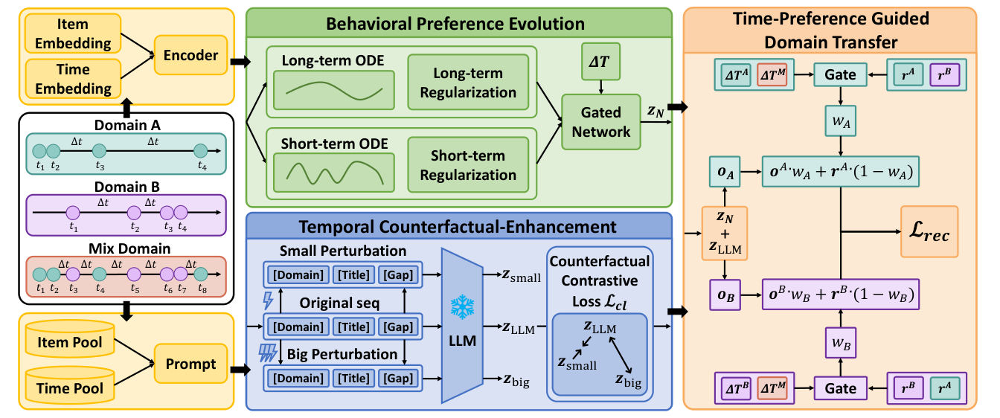
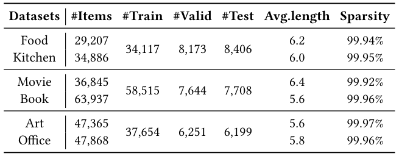
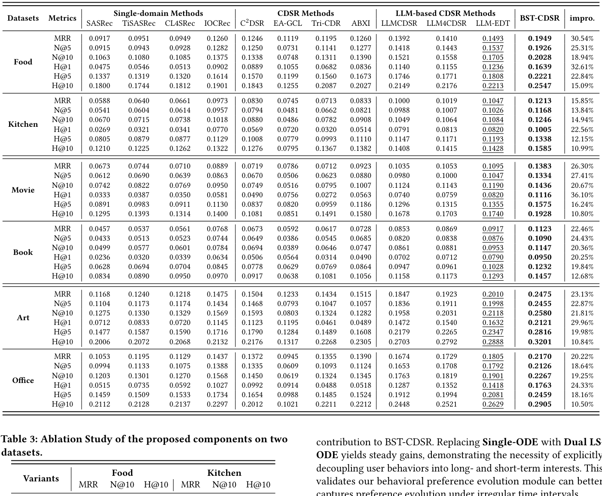
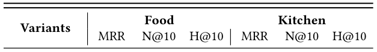
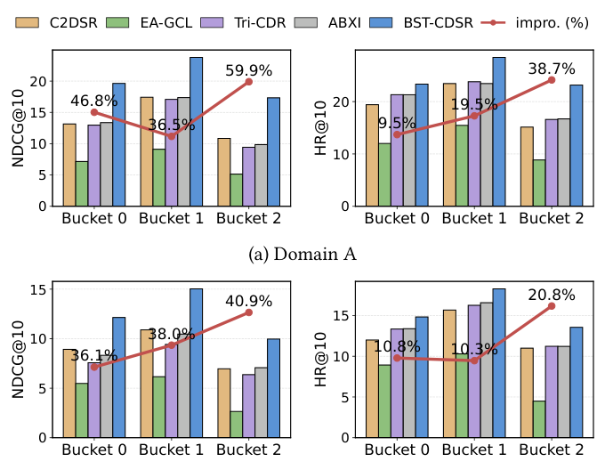

Bridging Behavior and Semantics for Time-aware Cross-Domain Sequential Recommendation (桥接行为与语义的时间感知跨域序列推荐)
- 会议/期刊: SIGIR 2026 (第49届国际ACM SIGIR会议，Melbourne, VIC, Australia)
- 推荐链路定位: 召回 (Retrieval) — 跨域序列下一物品预测 (Next-Item Prediction)
- 研究方向: 跨域与多场景推荐 (主) / 序列与会话推荐 (次)
- 论文原文: https://arxiv.org/abs/2605.02369v1
- 开源代码: 暂未开源（原文与预提取均未发现开源代码链接）
TL;DR (核心速览)
针对跨域序列推荐 (CDSR) 中"同一时间间隔在不同域对应不同偏好漂移程度"与"语义偏好被当作时不变静态特征"两大痛点，本文提出 BST-CDSR：用神经 ODE + 事件驱动 GRU 解耦长短期行为偏好并做连续时间演化，用 LLM 对离散化时间间隔 token 建模时间感知语义并施加反事实扰动增强时间敏感性，最后用时间偏好引导的门控自适应控制跨域迁移权重以抑制负迁移。在三个真实数据集上，模型在 HR@10/NDCG@10 等指标上一致优于强基线（具体数值见原文表 2）。
Background & Motivation (背景与动机)
- 领域背景与主流范式: 跨域序列推荐 (CDSR) 通过联合建模用户在多个域（如 Movie / Book / Food）上的行为序列来缓解交互稀疏。主流范式分两支：(1) 纯 ID 行为路线，依赖全重叠用户、显式对齐跨域行为相关性（如跨域序列迁移模型）；(2) 近期 LLM 语义注入路线，如 LLM4CDSR 用 LLM 学习统一跨域语义表征、URLLM 用 LLM 抽取物品属性语义构建物品-属性图。
- 现有方法局限 (Limitations of Prior Work):
- 忽略域相关的交互频率与兴趣衰减速率：同一时间间隔（如一周）在电影域可能已发生多次兴趣漂移，在图书域却可能兴趣稳定。原文图 1(a) 显示电影域单日交互占比约 54.6%，图书域约 45.5%，长间隔 (>7天) 占比分别为 10.7% 与 15.0%，说明域间时间模式显著异质。
- 将语义偏好视为时不变静态特征：部分语义交互源于情境需求（如圣诞节看圣诞电影），节日过后兴趣即消失；把"情境语义"误当"稳定偏好"并在跨域迁移中传播，会直接导致负迁移。
- 离散序列编码器只在交互点更新：交互之间的偏好连续演化与长间隔的累积影响无法被捕捉。
- 核心挑战 (Key Challenge): 跨域时间错位下如何准确建模偏好演化？如何建模时间依赖语义以防止负迁移？简单特征拼接或加深网络无法解决，因为混合域序列会模糊域特有的时间信号，且 LLM 对绝对数值时间推理能力有限（原文引用 [14,17]）。
- 核心洞察与切入点 (Key Insight): 原文第 2 节数据洞察——(i) 交互间隔高度非均匀且域相关（图 1(a)）；(ii) 物品语义与交互时间强相关，代表性电影（如 A Merry Friggin' Christmas、Christmas Lodge、Whiskey Tango Foxtrot）的交互频率呈现与语义一致的明显时间聚集（图 1(b)）。由此得出：时间携带排序之外的丰富信息，必须把域相关交互间隔与语义-时间相关性显式注入模型。

Problem Formulation & Method (问题定义与方法架构)
1. 符号定义与输入表征 (Notations & Input Representations)
- 双域场景：域 \(A\) 与域 \(B\)，物品集 \(I^A\)、\(I^B\)，共享时间空间 \(T\)。
- 用户 \(u\) 的交互记为物品-时间对 \((i,t)\)，两域序列：
- \(S^A=\{(i^A_k,t^A_k)\}_{k=1}^{n}\)，\(S^B=\{(i^B_k,t^B_k)\}_{k=1}^{m}\)
- 按时间合并构造统一跨域序列 \(S^M\)。
- 任务：预测各域下一物品 \(i^A_{n+1}\)、\(i^B_{m+1}\)。
- 嵌入维度统一为 \(d\)；序列短于长度 \(N\) 时零向量填充。
- 物品嵌入表：域专属 \(M^A\in\mathbb{R}^{|I^A|\times d}\)、\(M^B\in\mathbb{R}^{|I^B|\times d}\)，域共享 \(M^M\in\mathbb{R}^{(|I^A|+|I^B|)\times d}\)。
- 时间编码：绝对时间查表 \(M^{at}\in\mathbb{R}^{|T|\times d}\)；相对时间间隔 \(\Delta_i=t_i-t_{i-1}\)（\(\Delta_1=-1\) 标记序列起点），对数离散化 \(pos_i=\lfloor a\log(\Delta_i+2)\rfloor\) 后查表 \(M^{rt}\in\mathbb{R}^{|P|\times d}\)。
2. 整体流水线 (Overall Architecture)
数据流：域 A / 域 B / 混合域三条序列分别经嵌入层 → 行为偏好演化模块（长短期 ODE + 门控融合）→ 与 LLM 时间语义表征融合 → 时间偏好引导的域迁移门控 → 输出各域推荐打分。
flowchart TD
A["输入层: 域A/域B/混合域序列 (物品ID + 绝对时间 + 相对间隔)"] --> B["嵌入层: 物品嵌入 + 绝对/相对时间嵌入"]
B --> C["行为偏好演化: 长/短期神经ODE + 事件驱动GRU + 时间感知门控融合"]
A --> D["时间语义生成: 离散[Gap] token + LLM + 反事实扰动对比"]
C --> E["行为-语义融合表征 r_A / r_B"]
D --> E
E --> F["时间偏好引导域迁移门控: o = o·w + r·(1-w)"]
F --> G["各域下一物品打分预测"]
3. 核心模块设计与数学原理 (Key Designs & Formulations)
(1) 行为偏好演化模块（长短期解耦 + 连续时间 ODE）
- 先用 Transformer 层得到物品级瞬时偏好 \(E=\mathrm{Att}(\mathrm{Emb}(S))\)，\(\bm{e}_t\in E\) 为第 \(t\) 次交互的离散瞬时偏好。
- 长期偏好：交互之间按神经 ODE 平滑演化，归一化间隔 \(\tilde{\Delta}_t=\log_2(\Delta_t+2)/\log_2(\Delta_{max}+2)\)： $\(\frac{d\bm{h}^L_t}{dt}=f_L(\bm{h}^L_t,\tilde{\Delta}_t)\)$ 实践中用一阶 Euler 近似：\(\bm{h}^L_{t'}=\bm{h}^L_t+\tilde{\Delta}_t\cdot f_L(\bm{h}^L_t,\tilde{\Delta}_t)\)；观测到交互 \(i_{t+1}\) 后做事件驱动更新：\(\bm{h}^L_{t+1}=\mathrm{GRU}(\bm{e}_{t+1},\bm{h}^L_{t'})\)。
- 短期偏好：同构但参数独立，捕捉快速变化的瞬时意图。
- 时间感知门控融合： $\(\bm{g}_{t+1}=\sigma(W[\bm{h}^L_{t+1},\bm{h}^S_{t+1},\tilde{\Delta}_t]),\quad \bm{z}_{t+1}=\bm{g}_{t+1}\odot\bm{h}^S_{t+1}+(1-\bm{g}_{t+1})\odot\bm{h}^L_{t+1}\)$ 物理直觉：门控输入含归一化间隔，使模型能按时间间隔长短动态调节长短期依赖权重。取最后一步 \(\bm{z}_N\) 作为域 A/B 的行为偏好。
(2) 时间反事实增强语义偏好生成器
- 离散时间提示构造：LLM 对连续数值时间推理能力弱，故将 \(\Delta_i\) 映射为离散 token \([\mathrm{Gap}]_j=\phi(\Delta_i)\in V_{gap}\)，并在每条交互文本前加域 token（\([\mathrm{A\_Domain}]\)/\([\mathrm{B\_Domain}]\)），使 LLM 能识别域切换。提示模板为 "You will act as a time-aware preference interpreter..."。
- 语义抽取与降维：\(\bm{Z}_{LLM}=\mathrm{LLM}(x)\in\mathbb{R}^{L\times D_{LLM}}\)，取最后有效 token 隐状态，经 PCA 降维 \(f_{PCA}:\mathbb{R}^{D_{LLM}}\to\mathbb{R}^{D_{Mid}}\) 再经适配层 \(f_{Adapt}:\mathbb{R}^{D_{Mid}}\to\mathbb{R}^{d}\) 得 \(\bm{z}_{LLM}\)（沿用 LLMEmb 思路）。
- 反事实时间敏感性增强：在保留交互语义的前提下扰动时间模式，构造原始序列 \(\bm{z}_{LLM}\)、小扰动 \(\bm{z}_{small}\)、大扰动 \(\bm{z}_{big}\) 三视图，用反事实对比损失 \(\mathcal{L}_{cf}\) 迫使语义表征对时间偏移敏感（原文该小节在提取文本中被截断，具体扰动幅度与对比形式以原文 4.3.2 节为准）。
(3) 时间偏好引导的域迁移模块
- 对每个域，用时间模式 \(\Delta T\) 与偏好相关性经门控产生迁移权重 \(w_A\)、\(w_B\)，最终表征为源域表征与目标域表征的凸组合： $\(\bm{o}_A=\bm{o}_A\cdot w_A+\bm{r}_A\cdot(1-w_A),\quad \bm{o}_B=\bm{o}_B\cdot w_B+\bm{r}_B\cdot(1-w_B)\)$ 其中 \(\bm{r}_A,\bm{r}_B\) 为行为-语义融合表征。物理直觉：当源域语义是情境性、时间上不可迁移时，门控自动压低迁移权重，从而缓解负迁移。
4. 训练目标、负采样与推理复杂度 (Optimization, Negative Sampling & Complexity)
- 损失函数：总损失由推荐主损失 \(\mathcal{L}_{rec}\)、反事实对比损失 \(\mathcal{L}_{cf}\)、长期平滑正则 \(\mathcal{L}_L\)、短期对比对齐正则 \(\mathcal{L}_S\) 组成（原文未在提取文本中给出总损失显式加权公式，权重系数以原文为准）：
- 长期正则（短间隔强约束、长间隔弱约束）： $\(\mathcal{L}_L=\sum_{t=2}^{N}(1-\tilde{\Delta}_t)\|\bm{h}^L_t-\bm{h}^L_{t-1}\|_2^2\)$
- 短期对比对齐（\(\bm{h}^S_t\) 与自身 \(\bm{e}_t\) 拉近、与同 batch 其他交互推远，温度 \(\tau\)）： $\(\mathcal{L}_S=-\sum_t\log\frac{\exp(\mathrm{sim}(\bm{h}^S_t,\bm{e}_t)/\tau)}{\sum_j\exp(\mathrm{sim}(\bm{h}^S_t,\bm{e}_j)/\tau)}\)$
- 训练负采样策略：\(\mathcal{L}_S\) 采用 in-batch 负样本（同 batch 其他交互）；推荐主损失 \(\mathcal{L}_{rec}\) 的具体负采样形式原文提取文本未完整给出，需以原文为准。
- 时间与空间复杂度：ODE 用一阶 Euler 单步近似，避免昂贵数值积分求解器；LLM 语义表征为离线预抽取（PCA + 适配层降维），在线仅做查表与轻量门控融合；原文未报告具体训练单 epoch 耗时、推理延迟 (ms/request) 与峰值显存。
Experimental Setup & Evaluation Protocol (实验设置与评估协议)
- 数据集统计与预处理: 原文使用三个真实数据集（Movie-Book 及 Food-Kitchen 等，表 1 给出统计量）。提取文本中表 1 的具体数值未完整呈现，以下仅列出原文明确提及的信息，其余以原文表 1 为准：
| 数据集 (Dataset) | 用户数 (#Users) | 物品数 (#Items) | 交互数 (#Interactions) | 稀疏度/密度 (Sparsity) | 模态/辅助特征说明 |
|---|---|---|---|---|---|
| Movie-Book | 原文表 1（提取文本未给出具体数值） | - | - | - | 物品标题文本 (LLM 语义输入) |
| Food-Kitchen | 原文表 1（提取文本未给出具体数值） | - | - | - | 物品标题文本 (LLM 语义输入) |
| 第三个数据集 | 原文表 1（提取文本未给出具体数值） | - | - | - | - |

- 数据划分方式 (Splitting Strategy): 原文提取文本未明确说明划分策略（LOO / Ratio / 全局时间戳切分），需以原文实验设置章节为准；鉴于任务为带时间戳的下一物品预测，存在按时间顺序切分的可能性，但原文未报告，此处不做臆断。
- 排名评测协议 (Ranking Protocol): 原文提取文本未明确标注 Full-Ranking 还是 Sampled Ranking，需以原文为准。
- 评价指标与显著性检验: 原文表 2 报告 HR@10、NDCG@10 等指标（具体指标集合以原文表 2 为准）；是否进行配对显著性检验原文未报告。
Key Experimental Results (核心实验结果)
1. 主实验对比 (Main Results)
原文表 2 报告 BST-CDSR 与全部基线在三个数据集上的性能，摘要与结论均声明"consistently outperforms baselines"。由于提取文本未包含表 2 的具体数值，此处不臆造数字，具体数值请查阅原文表 2：
| 数据集 | 指标 | 传统/协同过滤基线 | 序列/图/多模态最强基线 | 本文方法 (Ours) | 相对提升 (Improv.) |
|---|---|---|---|---|---|
| Movie-Book | HR@10 / NDCG@10 | 原文表 2 | 原文表 2 | 原文表 2 | 原文表 2 |
| Food-Kitchen | HR@10 / NDCG@10 | 原文表 2 | 原文表 2 | 原文表 2 | 原文表 2 |
| 第三数据集 | HR@10 / NDCG@10 | 原文表 2 | 原文表 2 | 原文表 2 | 原文表 2 |

2. 消融实验与控制变量分析 (Ablation Study)
原文表 3 在两个数据集上对核心组件做消融（行为偏好演化、时间反事实语义生成、时间偏好引导域迁移等），验证各模块贡献。提取文本未给出具体下降幅度数值，需以原文表 3 为准；消融是否严格控制参数量对齐原文未报告。

3. 稀疏度/冷启动分桶与超参敏感度 (Sparsity Buckets & Hyperparameters)
- 时间分布分桶表现: 原文图 3 在 Food-Kitchen 数据集上按不同时间分布与基线做性能对比，用于验证模型在异质时间间隔下的鲁棒性（具体分桶数值以原文图 3 为准）。
- 关键超参数敏感度: 温度系数 \(\tau\)、ODE 归一化参数 \(a\)、损失权重等敏感度分析原文提取文本未报告，需以原文为准。
- 线上 A/B 测试结果: 原文仅包含离线实验，未报告线上 A/B 测试。

Highlights, Limitations & Critiques (亮点、局限与审稿级批判)
- 核心亮点与可迁移性:
- 连续时间 + 事件驱动的双状态 ODE 范式：长短期解耦 + Euler 单步近似在工程上廉价，可迁移到任意带时间戳的序列推荐（如 POI、电商会话）。
- 离散 [Gap] token + 反事实扰动：绕开 LLM 数值时间推理弱的缺陷，用离散 token 让 LLM 感知时间，再用反事实对比增强时间敏感性，这一"离散化 + 反事实"组合对 LLM4Rec 的时间建模具有普适参考价值。
- 门控式域迁移权重：用时间模式与偏好相关性显式控制迁移强度，是缓解 CDSR 负迁移的轻量可插拔设计。
- 局限性与审稿视角批判 (Critical Limitations):
- 评估协议披露不足：提取文本未明确数据划分（是否全局时间戳切分）、候选集打分协议（Full vs Sampled Ranking）与显著性检验，审稿中会要求补充；若采用随机比例划分而非时间切分，则存在未来信息泄露风险。
- LLM 依赖的离线成本与可复现性：LLM 语义表征需离线预抽取，PCA + 适配层的具体维度 \(D_{Mid}\)、所用 LLM 型号与推理成本原文提取文本未给出；且代码未开源，复现门槛高。
- 反事实扰动设计细节缺失：小/大扰动的幅度定义与 \(\mathcal{L}_{cf}\) 的具体形式在提取文本中被截断，若扰动幅度为手工设定，则超参敏感度可能较高。
- 仅双域设定：方法限定域 A/域 B 两域，向多域（>2）扩展时的门控组合复杂度与负迁移控制未讨论。
- 效率数据缺失：未报告训练耗时、推理延迟与显存，工业落地价值难以评估。
Rating (四维评分)
- 方法创新性 (Novelty): ⭐⭐⭐⭐（ODE 连续时间 + LLM 反事实时间语义 + 门控域迁移的三段式组合有新意，但各组件单独看均有先例）
- 评估协议与实验扎实度 (Protocol & Experiments): ⭐⭐⭐（三数据集 + 消融 + 时间分布分析较完整，但划分协议、排序协议与显著性检验披露不足）
- 写作与数学规范度 (Clarity & Rigor): ⭐⭐⭐⭐（符号与公式清晰，ODE 与正则设计动机明确；部分模块细节在正文中依赖原文补充）
- 工业落地与复现价值 (Industrial & Practical Value): ⭐⭐⭐（Euler 近似与离线 LLM 抽取利于落地，但代码未开源、效率数据缺失、LLM 成本未评估）